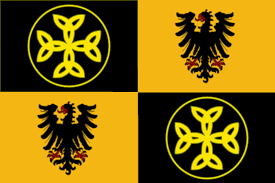
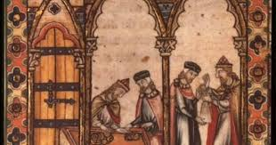
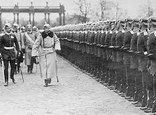

East Francia
The concept of Germany as a distinct region in Central Europe can be traced to Julius Caesar,
who referred to the unconquered area east of the Rhine associated with the Germanic tribes as
"Germania", thus distinguishing it from Gaul (France). The victory of the Germanic tribes in
the Battle of the Teutoburg Forest (AD 9) prevented annexation of Germania ("Magna Germania")
by the Roman Empire, although the Roman provinces of Germania Superior and Germania Inferior
were established along the Rhine. Following the Fall of the Western Roman Empire, the Franks
conquered the other West Germanic tribes. When the Frankish Empire was divided among Charles
the Great's heirs in 843, the eastern part became East Francia. In 962, Otto I became the
first Holy Roman Emperor of the Holy Roman Empire, the medieval German state.
The concept of Germany as a distinct region in Central Europe can be traced to Julius Caesar,
who referred to the unconquered area east of the Rhine associated with the Germanic tribes
as "Germania", thus distinguishing it from Gaul (France). The victory of the Germanic tribes
in the Battle of the Teutoburg Forest (AD 9) prevented annexation of Germania ("Magna
Germania") by the Roman Empire, although the Roman provinces of Germania Superior and
Germania Inferior were established along the Rhine. Following the Fall of the Western
Roman Empire, the Franks conquered the other West Germanic tribes. When the Frankish Empire
was divided among Charles the Great's heirs in 843, the eastern part became East Francia.
In 962, Otto I became the first Holy Roman Emperor of the Holy Roman Empire, the medieval
German state.

Middle ages period
The period of the High Middle Ages saw several important developments within the
German-speaking areas of Europe. The first was the establishment of the trading
conglomerate known as the Hanseatic League, which was dominated by a number of German
port cities along the Baltic and North Sea coasts. The second was the growth of a
crusading element within German christendom. This led to the establishment of the
State of the Teutonic Order, established along the Baltic coast of what is today
Estonia, Latvia, and Lithuania. This crusader state led to the Christianization of
these regions, as well as an extension of Germanic culture and language eastward. Also
during this period, German Emperors became embroiled in conflicts with the Catholic
Church over various political issues, resulting in the Investiture Controversy.
In the Late Middle Ages, the regional dukes, princes, and bishops gained power at
the expense of the emperors. Martin Luther led the Protestant Reformation within the
Catholic Church after 1517, as the northern and eastern states became Protestant,
while most of the southern and western states remained Catholic. The two parts of the
Holy Roman Empire clashed in the Thirty Years' War (1618–1648), which was ruinous to
the twenty million civilians living in both parts. The Thirty Years' War brought
tremendous destruction to Germany; more than 1/4 of the population in the German states
were killed by the catastrophic war. The estates of the Holy Roman Empire attained a
high extent of autonomy in the Peace of Westphalia, some of them being capable of their
own foreign policies or controlling land outside of the Empire, the most important being
Austria, Prussia, Bavaria and Saxony. With the French Revolution and the Napoleonic Wars
from 1803 to 1815, feudalism fell away by reforms and the dissolution of the Holy Roman
Empire. Thereafter liberalism and nationalism clashed with reaction. The German
revolutions of 1848–49 failed. The Industrial Revolution modernized the German economy,
led to the rapid growth of cities and the emergence of the socialist movement in
Germany. Prussia, with its capital Berlin, grew in power. German universities became
world-class centers for science and humanities, while music and art flourished. The
unification of Germany (excluding Austria) was achieved under the leadership of the
Chancellor Otto von Bismarck with the formation of the German Empire in 1871. This
resulted in the Kleindeutsche Lösung, ("small Germany solution", Germany without
Austria), rather than the Großdeutsche Lösung, ("greater Germany solution", Germany
with Austria). The new Reichstag, an elected parliament, had only a limited role in
the imperial government. Germany joined the other powers in colonial expansion in Africa
and the Pacific.

Wolrd war
By 1900, Germany was the dominant power on the European continent and its rapidly expanding
industry had surpassed Britain's while provoking it in a naval arms race. Since
Austria-Hungary declared war on Serbia, Germany had led the Central Powers in World War
I (1914–1918) against the Allied Powers. Defeated and partly occupied, Germany was forced
to pay war reparations by the Treaty of Versailles and was stripped of its colonies and
significant territory along its borders. The German Revolution of 1918–19 put an end to the
German Empire and established the Weimar Republic, an ultimately unstable parliamentary
democracy. In January 1933, Adolf Hitler, leader of the Nazi Party, used the economic
hardships of the Great Depression along with popular resentment over the terms imposed on
Germany at the end of World War I to establish a totalitarian regime. This Nazi Germany
made racism, especially antisemitism, a central tenet of its policies, and became
increasingly aggressive with its territorial demands, threatening war if they were not met.
Germany quickly remilitarized, then annexed Austria and the German-speaking areas of
Czechoslovakia in 1938. After seizing the rest of Czechoslovakia, Germany launched an
invasion of Poland, which quickly grew into World War II. During the war, the Nazi regime
established a systematic genocide program known as the Holocaust which killed 17 million
people, including 6 million Jews (representing 2/3rd of the European Jewish population of
1933),[1] Following the Allied invasion of Normandy in June, 1944, the German Army was
pushed back on all fronts until the final collapse in May 1945. Under occupation by the
Allies, Austria was again made a separate country, denazification efforts took place, large
populations under former German-occupied territories were displaced, German territories were
split up by the victorious powers. Germany spent the entirety of the Cold War era divided
into the NATO-aligned West Germany and Warsaw Pact-aligned East Germany. Germans also fled
from Communist areas into West Germany, which experienced rapid economic expansion, and
became the dominant economy in Western Europe.